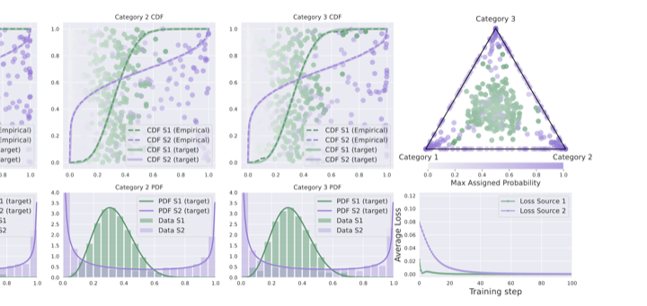
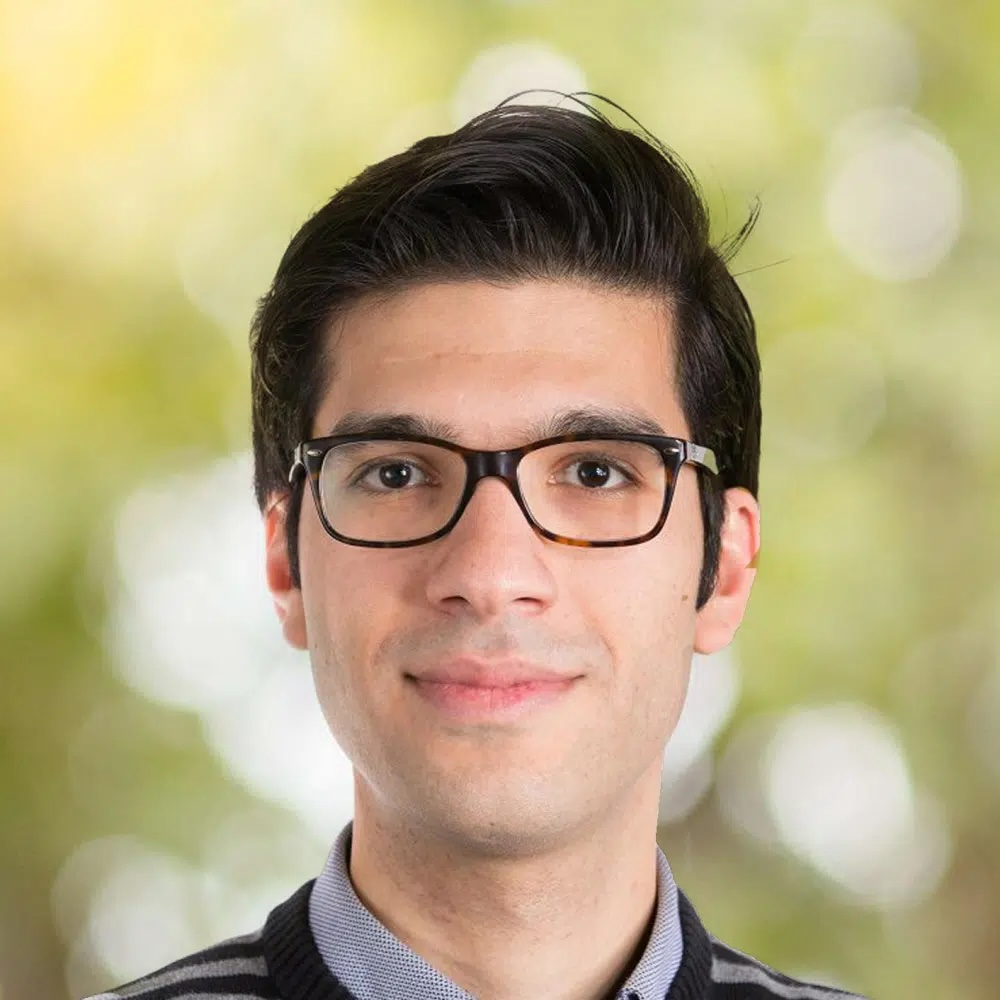
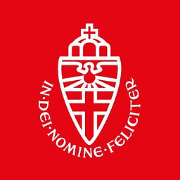
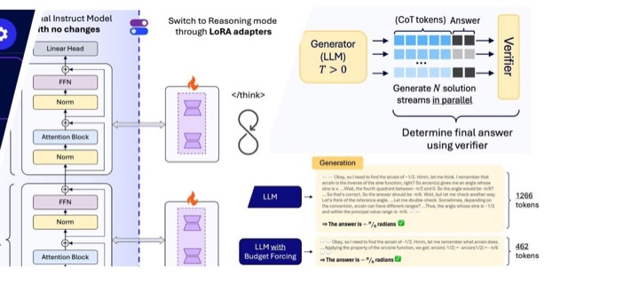
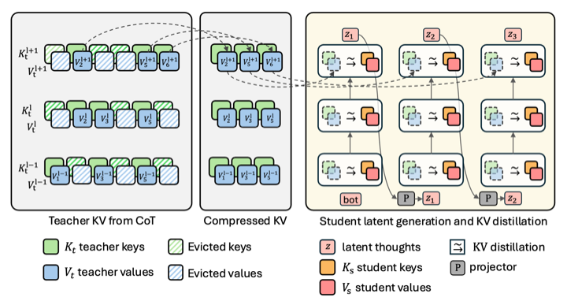
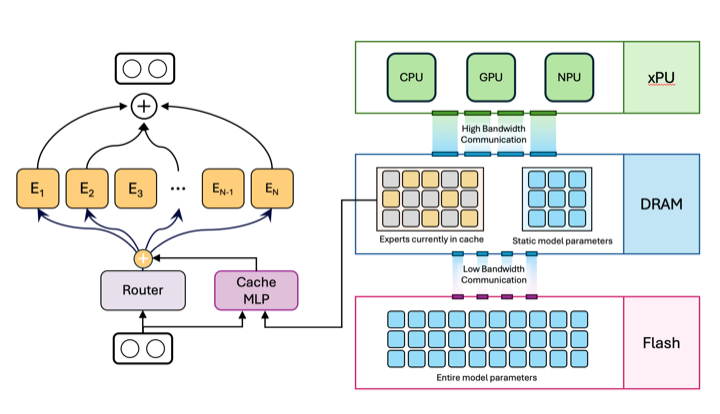
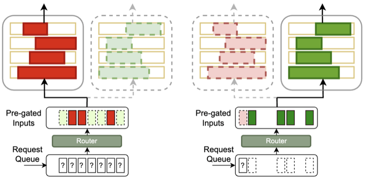
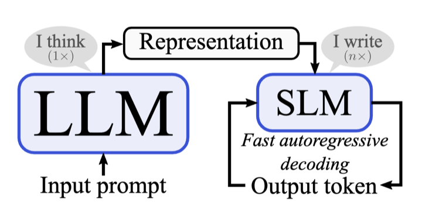
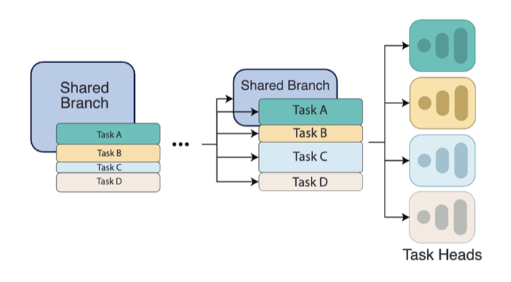
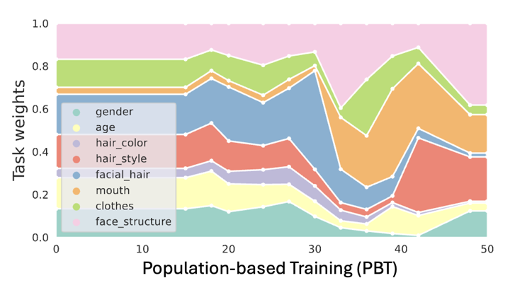

ICML 2026
Dirichlet-Prior Shaping
Guiding expert specialization in upcycled mixture-of-experts.
Read paper
Principal Research Scientist at NVIDIA in Zurich, working on the Nemotron team and developing efficient architectures for large language models.
I am interested in building capable, efficient AI models and advancing the field through open and reproducible research.
Previously, I was a Senior Staff Research Scientist and Manager at AI Research in Amsterdam, where I led a team focused on efficient LLM architectures. My work covered mixture-of-experts models, efficient and latent reasoning, on-device LLM deployment, computer vision, multi-task learning, and continual learning. I also organized the Qualcomm Innovation Fellowship Program in Europe from 2019 to 2023.
I obtained my PhD at the Diagnostic Image Analysis Group,

From June to November 2016, I was a visiting researcher at Harvard University, studying tumor-associated stroma as a prognostic biomarker in breast cancer with collaborators from Harvard, NIH, and Mayo Clinic.
NVIDIA · Zurich, Switzerland

Guiding expert specialization in upcycled mixture-of-experts.
Read paper
Reasoning in small LLMs with LoRA adapters, supervised fine-tuning, and reinforcement learning.
Read paper
Distilling knowledge from a compressed teacher KV-cache into a latent-reasoning student.
Read paper
Efficient mixture-of-experts inference on mobile devices with limited DRAM.
Read paper
Refactorizing LLMs as router-decoupled mixture-of-experts with system co-design.
Read paper
Combining large and small language models for fast autoregressive decoding.
Read paper
Learning to share, specialize, and prune representations for multi-task learning.
Read paper
Scalarization for multi-task and multi-domain learning at scale.
Read paper